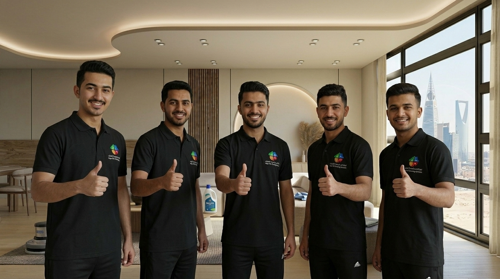

أفضل شركة تنظيف منازل بشمال الرياض | شركة نقاء للتنظيف
عندما يبحث السكان عن شركة تنظيف منازل بشمال الرياض فإنهم لا يبحثون فقط عن عمالة تقوم بأعمال النظافة التقليدية، بل يبحثون عن شركة تمتلك الخبرة والمعدات والقدرة على تقديم نتائج حقيقية تساهم في تحسين جودة الحياة داخل المنزل. فالمنازل النظيفة لا تمنح مظهرًا جماليًا فقط، بل تساعد أيضًا على توفير بيئة صحية ومريحة لجميع أفراد الأسرة.
ومع التوسع العمراني الكبير الذي تشهده أحياء شمال الرياض، أصبحت الحاجة إلى خدمات التنظيف الاحترافية أكثر أهمية من أي وقت مضى. ولهذا تسعى شركة نقاء لخدمات التنظيف إلى تقديم حلول متكاملة تناسب احتياجات الأسر المختلفة، سواء كانت المنازل صغيرة أو كبيرة أو عبارة عن شقق سكنية تحتاج إلى تنظيف دوري أو تنظيف عميق.
ويفضل الكثير من العملاء التعامل مع شركة نظافة بشمال الرياض تمتلك خبرة حقيقية في التعامل مع مختلف أنواع المنازل والأثاث والأسطح، وهو ما تعمل عليه شركة نقاء للتنظيف بالرياض من خلال فرق عمل مدربة وأدوات حديثة تساعد على تحقيق أفضل النتائج.
إن اختيار شركة نظافة منازل بشمال الرياض المناسبة يساهم بشكل مباشر في المحافظة على نظافة المنزل وتقليل الوقت والجهد الذي تبذله الأسرة في أعمال التنظيف اليومية، لذلك أصبحت خدمات التنظيف الاحترافية من الخدمات الأساسية التي تعتمد عليها العديد من الأسر داخل أحياء شمال الرياض.
لماذا يحتاج سكان شمال الرياض إلى شركة تنظيف منازل؟
تشهد أحياء شمال الرياض نموًا مستمرًا في عدد الوحدات السكنية والمجمعات الحديثة، كما أن طبيعة المنطقة تجعل المنازل معرضة بشكل دائم لتراكم الأتربة والغبار، وهو ما يزيد الحاجة إلى الاستعانة بخدمات شركة تنظيف منازل بشمال الرياض قادرة على تنفيذ أعمال التنظيف بشكل احترافي.
وتساعد خدمات شركة نظافة بشمال الرياض في معالجة العديد من المشكلات التي تواجه أصحاب المنازل بشكل يومي، ومنها:
- تراكم الغبار على الأثاث
- اتساخ السجاد والموكيت
- ظهور البقع على الكنب والمجالس
- تراكم الدهون داخل المطابخ
- الحاجة إلى تنظيف الحمامات بشكل عميق
- صعوبة تنظيف النوافذ والستائر بشكل احترافي
وتعمل شركة نقاء لخدمات التنظيف على توفير خدمات متخصصة تساعد العملاء على التخلص من هذه المشكلات بسهولة وفعالية، بينما تواصل شركة نقاء للتنظيف تطوير خدماتها لتلبية احتياجات الأسر في مختلف أحياء شمال الرياض.
كما أن الكثير من السكان يفضلون التعاقد مع شركة نظافة منازل بشمال الرياض بشكل دوري للحفاظ على مستوى ثابت من النظافة داخل المنزل طوال العام.
شركة نقاء لخدمات التنظيف وخبرتها في تنظيف المنازل بشمال الرياض
تمتلك شركة نقاء لخدمات التنظيف خبرة واسعة في مجال تنظيف المنازل والشقق، وهو ما جعلها من الخيارات التي يبحث عنها العديد من العملاء الراغبين في الحصول على نتائج احترافية.
وتعتمد شركة نقاء للتنظيف بالرياض على مجموعة من المعايير المهمة أثناء تنفيذ الخدمة، ومنها:
- الالتزام بالمواعيد
- الاهتمام بالتفاصيل الصغيرة
- استخدام معدات حديثة
- توفير مواد تنظيف مناسبة
- المحافظة على الأثاث والمفروشات
- تقديم ضمان على الخدمة
ولهذا السبب يفضل الكثير من العملاء التعامل مع شركة تنظيف منازل بشمال الرياض تمتلك خبرة حقيقية بدلًا من الاعتماد على حلول مؤقتة أو خدمات محدودة.
كما تحرص شركة نقاء للتنظيف على تقديم خدمات متنوعة تناسب احتياجات الأسر المختلفة، سواء كان العميل يحتاج إلى تنظيف شامل أو تنظيف جزئي لبعض أجزاء المنزل.

خدمات تنظيف المنازل التي تقدمها شركة نقاء للتنظيف بالرياض
تقدم شركة نقاء للتنظيف بالرياض مجموعة كبيرة من الخدمات التي تساعد على المحافظة على نظافة المنازل والشقق بمختلف أحجامها.
وتشمل هذه الخدمات:
تنظيف غرف المعيشة
تعتبر غرف المعيشة من أكثر الأماكن استخدامًا داخل المنزل، ولذلك تحتاج إلى عناية مستمرة للحفاظ على نظافتها ومظهرها الجيد. وتعمل شركة نقاء لخدمات التنظيف على تنظيف الأرضيات والطاولات والأسطح المختلفة وإزالة الأتربة المتراكمة بعناية.
تنظيف غرف النوم
تساعد النظافة داخل غرف النوم على توفير بيئة أكثر راحة وهدوءًا، لذلك تهتم شركة نظافة بشمال الرياض بتنظيف الأرضيات والأثاث وإزالة الغبار من جميع الزوايا.
تنظيف الممرات والمداخل
المداخل تعتبر أول ما يراه الزائر عند دخول المنزل، ولهذا تحرص شركة تنظيف منازل بشمال الرياض على الاهتمام بتنظيف هذه المناطق بشكل احترافي.
تنظيف الأسطح والزوايا
الكثير من الأتربة تتراكم في الأماكن التي يصعب الوصول إليها، ولذلك تعتمد شركة نقاء للتنظيف على أدوات تساعد على تنظيف هذه المناطق بدقة وكفاءة.
شركة نظافة منازل بشمال الرياض لتنظيف المجالس
تعتبر المجالس من أهم أجزاء المنزل في المجتمع السعودي، حيث يتم استقبال الضيوف والزوار فيها بشكل مستمر. ولهذا السبب تحتاج المجالس إلى مستوى خاص من العناية والنظافة للحفاظ على مظهرها الراقي.
وتوفر شركة نظافة منازل بشمال الرياض خدمات متخصصة تشمل:
- تنظيف الكنب
- تنظيف الطاولات
- تنظيف الأرضيات
- إزالة البقع
- إزالة الأتربة
- التعقيم
كما تعمل شركة نقاء لخدمات التنظيف على استخدام مواد مناسبة تساعد على المحافظة على الأقمشة والخامات المختلفة.
وتقدم شركة نقاء للتنظيف بالرياض حلول تنظيف للمجالس تناسب الاستخدام اليومي والاستخدام المكثف خلال المناسبات والتجمعات العائلية.
تنظيف الكنب باحترافية داخل المنازل
يعتبر الكنب من أكثر قطع الأثاث تعرضًا للأوساخ والبقع نتيجة الاستخدام المستمر. ولهذا يلجأ الكثير من العملاء إلى شركة تنظيف منازل بشمال الرياض للحصول على خدمة تنظيف احترافية تساعد على استعادة المظهر الجيد للكنب.
وتشمل الخدمة:
- إزالة الأتربة
- إزالة البقع
- التخلص من الروائح
- تنظيف الأقمشة
- التعقيم
وتسعى شركة نقاء للتنظيف إلى استخدام أساليب مناسبة لكل نوع من أنواع الأقمشة لضمان الحصول على أفضل النتائج الممكنة.
كما تؤكد شركة نقاء لخدمات التنظيف على أهمية تنظيف الكنب بشكل دوري للمحافظة على جودته وإطالة عمره الافتراضي.
تنظيف السجاد والموكيت داخل المنازل
يعتبر السجاد من أكثر العناصر التي تجمع الغبار والأوساخ داخل المنزل، ولذلك يحتاج إلى تنظيف دوري للحفاظ على نظافته. وتوفر شركة نظافة بشمال الرياض خدمات متخصصة لتنظيف السجاد والموكيت بمختلف أنواعه.
وتشمل الخدمة:
- إزالة الأتربة
- إزالة البقع
- تنظيف الألياف
- تحسين المظهر العام
- التعقيم
كما تعتمد شركة نقاء للتنظيف بالرياض على معدات تساعد على الوصول إلى الأوساخ العميقة الموجودة داخل السجاد. ولهذا يفضل العديد من العملاء الاستفادة من خدمات شركة نظافة منازل بشمال الرياض بشكل دوري للحفاظ على نظافة السجاد داخل المنزل.
لماذا تعتبر شمال الرياض أكثر مناطق الرياض احتياجًا لخدمات تنظيف المنازل؟
هناك العديد من الأسباب التي تجعل سكان شمال الرياض يعتمدون بشكل متزايد على خدمات شركة تنظيف منازل بشمال الرياض.
ومن أهم هذه الأسباب:
التوسع العمراني
تشهد المنطقة نموًا كبيرًا في عدد الأحياء والمجمعات السكنية الحديثة، مما يزيد الحاجة إلى خدمات التنظيف الاحترافية.
المساحات السكنية الكبيرة
الكثير من المنازل في شمال الرياض تتميز بمساحات واسعة تحتاج إلى عناية مستمرة للحفاظ على نظافتها.
الغبار والأتربة
تؤدي الظروف المناخية إلى تراكم الأتربة داخل المنازل بشكل مستمر، وهو ما يجعل خدمات شركة نظافة بشمال الرياض ضرورية للعديد من الأسر.
ضغط الوقت
لا يمتلك الكثير من السكان الوقت الكافي للقيام بأعمال التنظيف العميق، ولذلك يعتمدون على شركة نقاء لخدمات التنظيف للحصول على نتائج احترافية دون بذل مجهود إضافي.
وتواصل شركة نقاء للتنظيف تقديم حلول مرنة تناسب احتياجات العملاء المختلفة داخل جميع أحياء شمال الرياض.
مشاكل العملاء قبل التعاقد مع شركة تنظيف منازل بشمال الرياض
قبل التعاقد مع أي شركة تنظيف منازل بشمال الرياض يواجه العملاء مجموعة من المشاكل التي تدفعهم للبحث عن شركة احترافية تقدم خدمة موثوقة ونتائج واضحة. هذه المشاكل تتكرر كثيرًا داخل المنازل في شمال الرياض، خاصة مع كثرة الشركات غير المتخصصة أو التي تقدم خدمات سطحية فقط.
من أبرز هذه المشاكل:
ولهذا يلجأ الكثير من العملاء إلى شركة نظافة بشمال الرياض تمتلك نظام عمل واضح وخبرة حقيقية، وهو ما تقدمه شركة نقاء لخدمات التنظيف من خلال خدمات منظمة واحترافية.
كما أن شركة نقاء للتنظيف بالرياض تركز على حل هذه المشكلات من جذورها عبر توفير فريق مدرب، ومعدات حديثة، وضمان حقيقي على الخدمة، مما يجعل تجربة العميل أكثر راحة وموثوقية.
كيف تعمل شركة نقاء للتنظيف بالرياض؟ (خطوات تنفيذ الخدمة)
تعتمد شركة نقاء للتنظيف بالرياض على نظام عمل احترافي يهدف إلى تقديم خدمة منظمة من البداية حتى التسليم النهائي.
- استقبال الطلب — يتم استقبال طلب العميل وتحديد نوع الخدمة المطلوبة سواء تنظيف منازل أو تنظيف شقق داخل شمال الرياض.
- تحديد الموعد — تقوم شركة نظافة منازل بشمال الرياض بتحديد موعد مناسب للعميل حسب الوقت المتاح لديه.
- المعاينة الأولية — في بعض الحالات يتم إرسال فريق لمعاينة المكان وتحديد الأدوات والمواد المطلوبة.
- تجهيز فريق العمل — تقوم شركة نقاء لخدمات التنظيف بتجهيز فريق متخصص حسب نوع الخدمة المطلوبة داخل المنزل.
- تنفيذ عملية التنظيف — يتم تنفيذ جميع أعمال التنظيف بشكل دقيق يشمل الأرضيات، الأثاث، المطابخ، الحمامات، والغرف المختلفة.
- مراجعة الجودة — بعد الانتهاء يتم فحص المكان للتأكد من تحقيق أعلى مستوى من النظافة.
- تسليم الموقع للعميل — يتم تسليم المنزل للعميل بعد التأكد من رضا كامل عن الخدمة.
- الضمان والمتابعة — توفر شركة نقاء للتنظيف ضمان على الخدمة مع إمكانية إعادة المعالجة في حال وجود أي ملاحظات.
تنظيف المطابخ داخل المنازل بشمال الرياض
يعتبر المطبخ من أكثر الأماكن التي تحتاج إلى تنظيف عميق ودقيق داخل أي منزل، نظرًا لتراكم الدهون وبقايا الطعام بشكل يومي.
وتقدم شركة تنظيف منازل بشمال الرياض خدمات تنظيف مطابخ متكاملة تشمل:
- تنظيف الأسطح والأرفف
- إزالة الدهون المتراكمة
- تنظيف الأحواض
- تنظيف الأجهزة المنزلية الخارجية
- تعقيم شامل للمطبخ
كما تعتمد شركة نظافة بشمال الرياض على مواد تنظيف قوية وآمنة في نفس الوقت، لضمان إزالة الدهون دون التأثير على الأسطح.
وتحرص شركة نقاء للتنظيف بالرياض على تقديم نتائج واضحة في تنظيف المطابخ، مما يجعل المطبخ أكثر نظافة وصحة للاستخدام اليومي.
تنظيف الحمامات وتعقيمها بشكل احترافي
الحمامات من أكثر الأماكن التي تحتاج إلى عناية خاصة داخل المنزل، لذلك تقدم شركة نظافة منازل بشمال الرياض خدمات تنظيف وتعقيم شاملة للحمامات.
وتشمل الخدمة:
- تنظيف الأرضيات والجدران
- إزالة الترسبات الكلسية
- تنظيف الأحواض والمراحيض
- تعقيم شامل للقضاء على البكتيريا
- إزالة الروائح غير المرغوبة
وتستخدم شركة نقاء لخدمات التنظيف مواد تعقيم آمنة وفعالة تساعد على الحفاظ على بيئة صحية داخل المنزل. كما تهتم شركة نقاء للتنظيف بأدق التفاصيل داخل الحمامات لضمان تحقيق أعلى مستوى من النظافة.
تنظيف النوافذ والستائر داخل المنازل
تعد النوافذ والستائر من أكثر العناصر التي تتعرض للغبار بشكل مستمر، خاصة في أحياء شمال الرياض.
ولهذا تقدم شركة تنظيف منازل بشمال الرياض خدمات تنظيف متخصصة تشمل:
- تنظيف الزجاج الداخلي والخارجي
- إزالة الغبار من الإطارات
- تنظيف الستائر حسب نوع القماش
- إزالة البقع الخفيفة
كما تعتمد شركة نظافة بشمال الرياض على أدوات تساعد على الوصول إلى الأماكن المرتفعة والصعبة داخل النوافذ. وتحرص شركة نقاء للتنظيف بالرياض على التعامل مع الستائر بعناية للحفاظ على جودتها ومظهرها.
تنظيف غرف الأطفال داخل المنازل
غرف الأطفال تحتاج إلى مستوى عناية خاص لأنها يجب أن تكون بيئة نظيفة وصحية وآمنة.
وتوفر شركة نظافة منازل بشمال الرياض خدمات تنظيف غرف الأطفال التي تشمل:
- تنظيف الأرضيات
- تنظيف الألعاب
- إزالة الغبار من الأسطح
- تعقيم شامل للغرفة
- ترتيب عام للمكان
كما تهتم شركة نقاء لخدمات التنظيف باستخدام مواد آمنة لا تؤثر على صحة الأطفال.
تغطية أحياء شمال الرياض
تغطي شركة تنظيف منازل بشمال الرياض جميع الأحياء الرئيسية في المنطقة، وتقدم خدماتها بشكل يومي لتلبية احتياجات السكان.
حي النرجس
تقدم شركة تنظيف منازل بحي النرجس خدمات تنظيف شاملة للمنازل والشقق مع التركيز على التنظيف العميق.
حي الياسمين
توفر شركة تنظيف منازل بحي الياسمين خدمات تنظيف دورية للمنازل مع عناية خاصة بالأثاث والمجالس.
حي الملقا
تقدم شركة تنظيف منازل بحي الملقا خدمات احترافية تشمل تنظيف شامل للمنازل والمرافق الداخلية.
حي الصحافة
تعمل شركة تنظيف منازل بحي الصحافة على توفير خدمات تنظيف متكاملة تناسب احتياجات الأسر داخل الحي.
حي حطين
توفر شركة تنظيف منازل بحي حطين خدمات تنظيف عالية الجودة مع الاهتمام بالتفاصيل الدقيقة داخل المنزل.
حي العارض
تقدم شركة تنظيف منازل بحي العارض حلول تنظيف شاملة للمنازل الحديثة والشقق السكنية.
حي الربيع
توفر شركة تنظيف منازل بحي الربيع خدمات تنظيف دورية وعميقة للحفاظ على نظافة المنازل.
حي النفل
تقدم شركة تنظيف منازل بحي النفل خدمات تنظيف شاملة تشمل جميع أجزاء المنزل.
حي الغدير
توفر شركة تنظيف منازل بحي الغدير خدمات تنظيف متخصصة تناسب طبيعة المنازل في الحي.
حي الوادي
تقدم شركة تنظيف منازل بحي الوادي خدمات تنظيف متكاملة للمنازل والشقق.
حي التعاون
توفر شركة تنظيف منازل بحي التعاون خدمات تنظيف احترافية تناسب احتياجات السكان.
حي الندى
تقدم شركة تنظيف منازل بحي الندى خدمات تنظيف دورية للحفاظ على نظافة المنزل.
حي العقيق
توفر شركة تنظيف منازل بحي العقيق خدمات تنظيف شاملة للمنازل الحديثة.
حي المروج
تقدم شركة تنظيف منازل بحي المروج خدمات تنظيف احترافية للمنازل والشقق.
حي الملك فهد
توفر شركة تنظيف منازل بحي الملك فهد خدمات تنظيف متكاملة لجميع أجزاء المنزل.
حي المرسلات
تقدم شركة تنظيف منازل بحي المرسلات خدمات تنظيف عميق للمنازل والشقق.
حي المصيف
توفر شركة تنظيف منازل بحي المصيف خدمات تنظيف دورية وشاملة.
حي الورود
تقدم شركة تنظيف منازل بحي الورود خدمات تنظيف عالية الجودة داخل المنازل.
حي الرحمانية
توفر شركة تنظيف منازل بحي الرحمانية خدمات تنظيف متكاملة للمنازل والشقق.
حي المحمدية
تقدم شركة تنظيف منازل بحي المحمدية خدمات تنظيف احترافية تناسب مختلف الاحتياجات.
التنظيف العميق للمنازل داخل شمال الرياض
يُعتبر التنظيف العميق من أهم الخدمات التي تقدمها شركة تنظيف منازل بشمال الرياض لأنه لا يقتصر على التنظيف السطحي فقط، بل يصل إلى أدق التفاصيل داخل المنزل.
وتحرص شركة نقاء لخدمات التنظيف على تنفيذ التنظيف العميق بطريقة احترافية تشمل جميع أجزاء المنزل، خاصة الأماكن التي يصعب الوصول إليها في التنظيف اليومي.
ويشمل التنظيف العميق:
- تنظيف شامل للأرضيات
- إزالة الأتربة من الزوايا المخفية
- تنظيف خلف الأثاث والأجهزة
- تنظيف الجدران حسب الحاجة
- تنظيف وتعقيم شامل لكل الغرف
- إزالة البقع القديمة والمتراكمة
كما أن شركة نظافة بشمال الرياض تعتمد على معدات حديثة تساعد على الوصول إلى مستوى نظافة أعلى من التنظيف التقليدي، مما يجعل النتائج أكثر وضوحًا وفعالية.
ولهذا يفضل الكثير من العملاء الاستعانة بشركة نقاء للتنظيف بالرياض للحصول على تنظيف عميق يعيد للمنازل مظهرها النظيف والمرتب.
التعقيم المنزلي وأهميته داخل المنازل
أصبح التعقيم المنزلي جزءًا أساسيًا من خدمات شركة نظافة منازل بشمال الرياض خاصة مع زيادة الوعي الصحي داخل المجتمع.
وتقدم شركة نقاء للتنظيف خدمات تعقيم متكاملة تهدف إلى القضاء على البكتيريا والفيروسات داخل المنزل، مع الحفاظ على بيئة آمنة وصحية.
وتشمل خدمات التعقيم:
- تعقيم الأرضيات والأسطح
- تعقيم غرف النوم والمعيشة
- تعقيم المطابخ
- تعقيم الحمامات
- استخدام مواد آمنة ومعتمدة
وتحرص شركة نقاء لخدمات التنظيف على استخدام مواد تعقيم لا تؤثر على صحة الأطفال أو كبار السن داخل المنزل.
كما توفر شركة تنظيف منازل بشمال الرياض حلول تعقيم دورية للحفاظ على بيئة صحية داخل المنازل في جميع أحياء شمال الرياض.
جدول أسعار خدمات تنظيف المنازل بشمال الرياض
تقدم شركة نظافة بشمال الرياض أسعارًا تنافسية تناسب مختلف الفئات، مع إمكانية تعديل الأسعار حسب حجم العمل وطبيعة المنزل.
جدول الأسعار التقريبي — شركة نقاء للتنظيف بشمال الرياض
| الخدمة | السعر |
|---|---|
| تنظيف شقة صغيرة | 250 – 350 ريال |
| تنظيف شقة متوسطة | 400 – 550 ريال |
| تنظيف شقة كبيرة | 600 – 750 ريال |
| تنظيف منزل كامل | 700 – 1,200 ريال |
| تنظيف مجلس | 200 – 300 ريال |
| تنظيف كنب | 250 – 400 ريال |
| تنظيف سجاد | 150 – 300 ريال |
| تنظيف مطبخ | 200 – 350 ريال |
| تنظيف حمام | 150 – 250 ريال |
| تنظيف شامل (عميق) | يبدأ من 800 ريال |
✅ تؤكد شركة نقاء للتنظيف بالرياض أن جميع الأسعار استرشادية ويتم تحديد السعر النهائي بعد معاينة بسيطة لضمان العدالة والشفافية.
الضمان المقدم من شركة نقاء للتنظيف بالرياض
تتميز شركة نقاء للتنظيف بالرياض بتقديم ضمان حقيقي على جميع الخدمات، وهو ما يجعل العملاء يشعرون بالثقة والراحة عند التعامل معها.
ويشمل الضمان:
- إعادة الخدمة في حال وجود ملاحظات
- متابعة جودة العمل بعد التنفيذ
- التأكد من رضا العميل الكامل
- دعم فني وخدمة عملاء متواصلة
كما أن شركة نقاء لخدمات التنظيف تعتمد على سياسة الجودة أولاً، مما يجعلها من الشركات الموثوقة داخل شمال الرياض. ولهذا يفضل الكثير من العملاء التعامل مع شركة نظافة بشمال الرياض التي تقدم ضمانًا واضحًا بدلًا من الشركات غير المضمونة.
مقارنة بين التنظيف العادي والتنظيف الاحترافي
لفهم الفرق الحقيقي بين الخدمات، يمكن توضيح ذلك في المقارنة التالية:
❌ التنظيف العادي
- جودة سطحية
- معدات بسيطة
- مواد محدودة
- وقت غير منظم
- بدون ضمان
- وصول ضعيف للأماكن المخفية
✔ التنظيف الاحترافي (نقاء)
- جودة عميقة وشاملة
- معدات حديثة ومتطورة
- مواد آمنة وفعالة
- وقت محدد ومنهجي
- ضمان متوفر
- وصول شامل لكل التفاصيل
وتعتمد شركة تنظيف منازل بشمال الرياض على أسلوب احترافي يجعلها تتفوق على التنظيف التقليدي بشكل واضح.
لماذا تختار شركة نقاء لخدمات التنظيف؟
هناك العديد من الأسباب التي تجعل العملاء يفضلون شركة نقاء لخدمات التنظيف داخل شمال الرياض، ومن أهمها:
- خبرة طويلة في مجال تنظيف المنازل
- فرق عمل مدربة على أعلى مستوى
- استخدام معدات حديثة
- أسعار مناسبة لجميع الفئات
- تغطية جميع أحياء شمال الرياض
- التزام كامل بالمواعيد
- ضمان على الخدمة
- خدمة عملاء متاحة دائمًا
كما أن شركة نقاء للتنظيف تهدف إلى تقديم تجربة تنظيف متكاملة تجعل العميل يشعر بالراحة والرضا الكامل.
أهمية تنظيف المنازل بشكل دوري في شمال الرياض
يساعد التنظيف الدوري الذي تقدمه شركة نظافة بشمال الرياض على الحفاظ على مستوى ثابت من النظافة داخل المنزل طوال الوقت.
ويشمل التنظيف الدوري:
- تنظيف أسبوعي أو شهري
- متابعة حالة الأثاث
- إزالة الأتربة بشكل مستمر
- الحفاظ على المظهر العام للمنزل
وتوفر شركة نقاء للتنظيف بالرياض خطط تنظيف دورية تناسب جميع أنواع المنازل داخل شمال الرياض.
نصائح للحفاظ على نظافة المنزل لفترة أطول
حتى بعد الاستعانة بشركة تنظيف منازل بشمال الرياض يمكن اتباع بعض النصائح للحفاظ على النتائج:
- التهوية اليومية للمنزل
- تنظيف البقع فور ظهورها
- تنظيم الأثاث بشكل دوري
- تقليل تراكم الأتربة
- جدولة تنظيف احترافي كل فترة
وتساعد هذه النصائح على تقليل الحاجة إلى تنظيف عميق متكرر، مع الحفاظ على بيئة نظيفة وصحية داخل المنزل.
تكملة تغطية أحياء شمال الرياض
حي الندى
تقدم شركة تنظيف منازل بحي الندى خدمات تنظيف شاملة تناسب طبيعة المنازل الحديثة.
حي العقيق
توفر شركة تنظيف منازل بحي العقيق خدمات تنظيف عميق للمنازل والشقق.
حي المروج
تقدم شركة تنظيف منازل بحي المروج خدمات تنظيف دورية للحفاظ على النظافة المستمرة.
حي الملك فهد
توفر شركة تنظيف منازل بحي الملك فهد خدمات تنظيف احترافية للمنازل الكبيرة.
حي المرسلات
تقدم شركة تنظيف منازل بحي المرسلات خدمات تنظيف شاملة للمنازل والشقق.
حي المصيف
توفر شركة تنظيف منازل بحي المصيف خدمات تنظيف دورية وعميقة.
حي الورود
تقدم شركة تنظيف منازل بحي الورود خدمات تنظيف عالية الجودة للمنازل.
حي الرحمانية
توفر شركة تنظيف منازل بحي الرحمانية خدمات تنظيف متكاملة تناسب جميع الاحتياجات.
حي المحمدية
تقدم شركة تنظيف منازل بحي المحمدية خدمات تنظيف احترافية للمنازل والشقق.
الأسئلة الشائعة حول شركة تنظيف منازل بشمال الرياض
في هذا القسم نجيب عن أهم الأسئلة التي يطرحها العملاء قبل التعاقد مع شركة تنظيف منازل بشمال الرياض لضمان وضوح الخدمة ورفع مستوى الثقة.
لماذا تعتبر شركة نقاء أفضل شركة تنظيف منازل بشمال الرياض؟
تُعتبر شركة نقاء لخدمات التنظيف من الشركات المتميزة داخل شمال الرياض لأنها لا تقدم خدمة تنظيف فقط، بل تقدم تجربة متكاملة تشمل الجودة والالتزام والضمان.
ومن أهم أسباب تميزها:
- خبرة طويلة في مجال تنظيف المنازل
- استخدام أحدث المعدات
- فريق عمل مدرب
- أسعار مناسبة
- التزام كامل بالمواعيد
- تغطية شاملة لجميع أحياء شمال الرياض
- خدمة عملاء متواصلة
- ضمان على الخدمة
كما أن شركة نقاء للتنظيف بالرياض تهدف دائمًا إلى تحسين جودة الخدمات المقدمة لتلبية توقعات العملاء وتحقيق أعلى مستوى من الرضا.
الخاتمة
في النهاية، إذا كنت تبحث عن شركة تنظيف منازل بشمال الرياض تقدم خدمات احترافية وشاملة تناسب جميع أنواع المنازل والشقق، فإن اختيار الشركة المناسبة هو الخطوة الأهم للحصول على نتائج فعالة ومستوى نظافة متميز.
وتساعد خدمات شركة نظافة بشمال الرياض في توفير بيئة منزلية صحية ونظيفة تعكس الراحة والجودة داخل المنزل، خاصة مع نمط الحياة السريع وكثرة الالتزامات اليومية.
كما أن الاعتماد على شركة نقاء لخدمات التنظيف يمنحك تجربة تنظيف متكاملة تعتمد على الجودة والالتزام والضمان، بينما تواصل شركة نقاء للتنظيف تقديم حلول تنظيف احترافية تلبي احتياجات جميع العملاء داخل شمال الرياض.
وبذلك يصبح المنزل أكثر نظافة وراحة، وتتحول عملية التنظيف من عبء يومي إلى خدمة احترافية توفر الوقت والجهد وتضمن أفضل النتائج.
🎉 احجز الآن واحصل على معاينة مجانية
تواصل معنا الآن وسيتم تحديد أنسب سعر لمنزلك بعد المعاينة المجانية
اتصل بشركة نقاء لتنظيف منزلك بشمال الرياض
خدمة احترافية تشمل جميع أحياء شمال الرياض — معاينة مجانية وضمان على الجودة
- معاينة مجانية وسعر واضح
- ضمان على جودة الخدمة
- فريق عمل مدرب ومحترف
- تغطية جميع أحياء شمال الرياض
- خطط تنظيف دورية مرنة